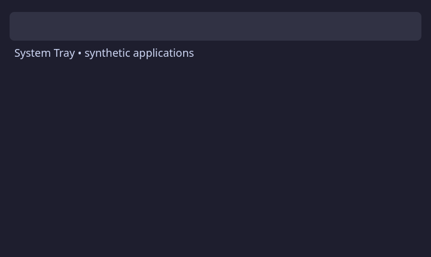
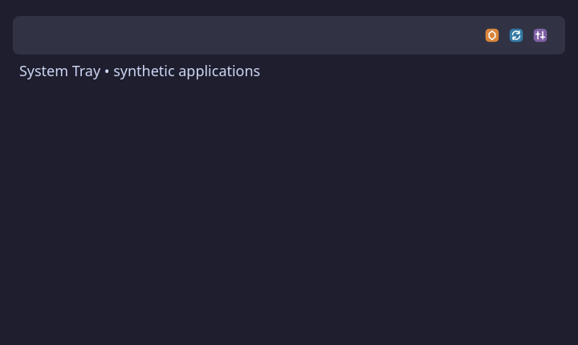
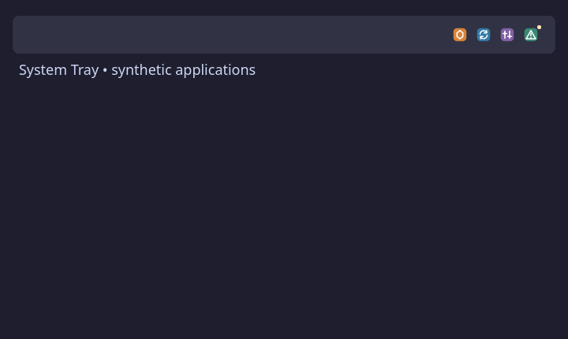
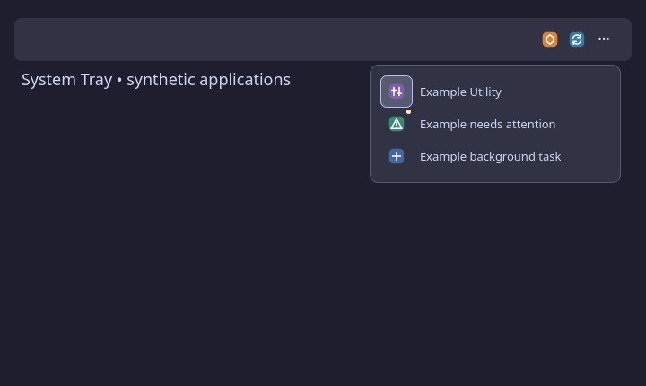
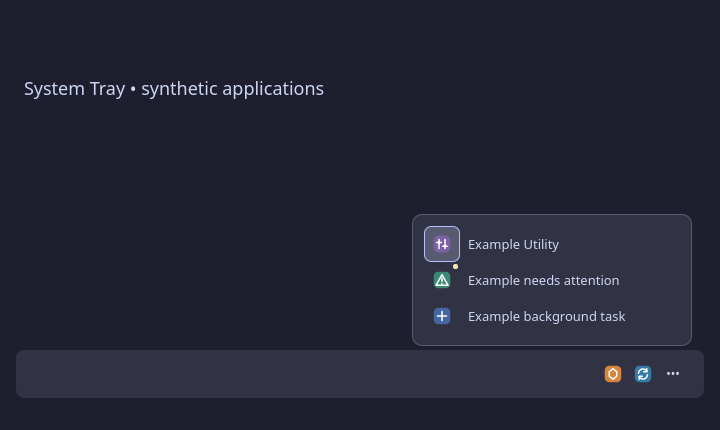
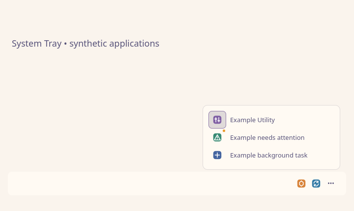
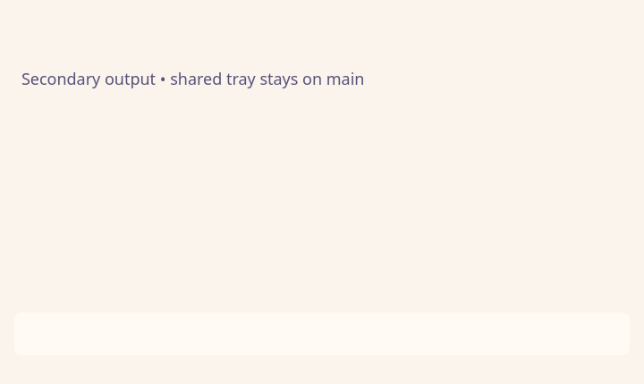
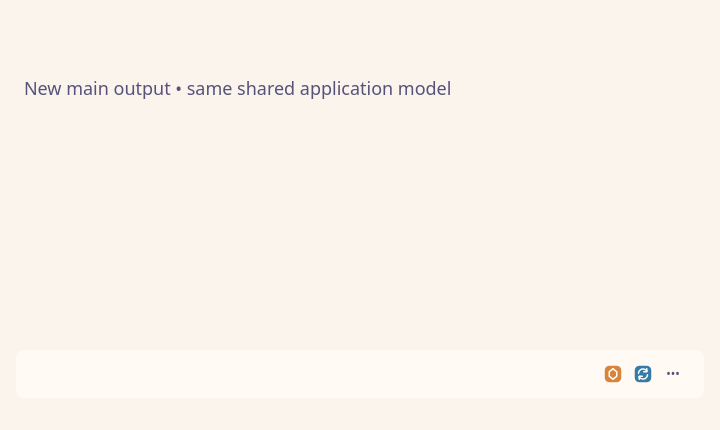
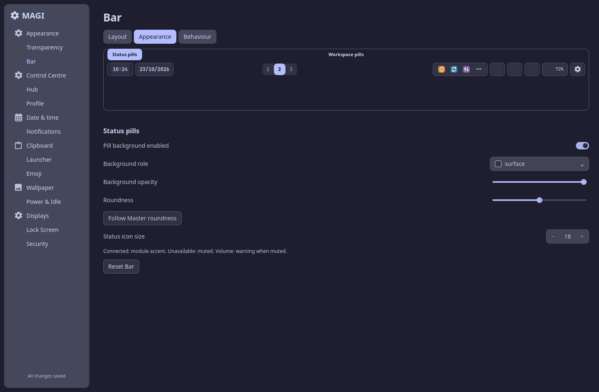

Empty

Application-like fixtures only. These are offscreen component captures, not native app menus or compositor acceptance. Main-output selection is separately asserted by the fleet test.










